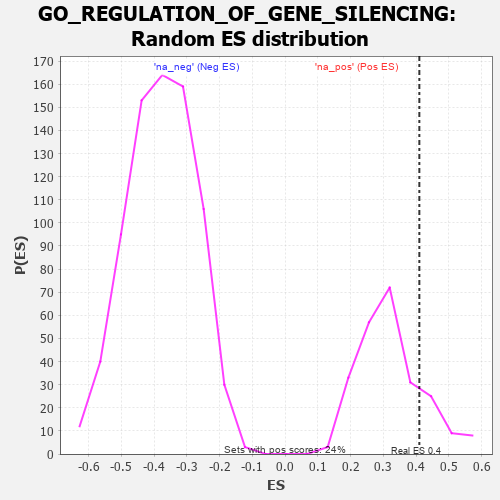

| | | Dataset | 7d |
| Phenotype | NoPhenotypeAvailable |
| Upregulated in class | na_pos |
| GeneSet | GO_REGULATION_OF_GENE_SILENCING |
| Enrichment Score (ES) | 0.40981832 |
| Normalized Enrichment Score (NES) | 1.2802035 |
| Nominal p-value | 0.1764706 |
| FDR q-value | 0.42239457 |
| FWER p-Value | 1.0 |
Table: GSEA Results Summary
 Fig 1: Enrichment plot: GO_REGULATION_OF_GENE_SILENCING
Fig 1: Enrichment plot: GO_REGULATION_OF_GENE_SILENCING
Profile of the Running ES Score & Positions of GeneSet Members on the Rank Ordered List
| PROBE | GENE SYMBOL | GENE_TITLE | RANK IN GENE LIST | RANK METRIC SCORE | RUNNING ES | CORE ENRICHMENT | | 1 | CDC45 | | | 239 | 0.950 | 0.0580 | Yes |
| 2 | NUP85 | | | 329 | 0.772 | 0.1184 | Yes |
| 3 | NUP54 | | | 505 | 0.627 | 0.1546 | Yes |
| 4 | HIRA | | | 568 | 0.608 | 0.2031 | Yes |
| 5 | RAE1 | | | 827 | 0.524 | 0.2192 | Yes |
| 6 | NUP93 | | | 1127 | 0.459 | 0.2241 | Yes |
| 7 | NUP43 | | | 1160 | 0.453 | 0.2620 | Yes |
| 8 | NUP88 | | | 1429 | 0.404 | 0.2658 | Yes |
| 9 | XPO5 | | | 1700 | 0.357 | 0.2649 | Yes |
| 10 | AGO2 | | | 1767 | 0.343 | 0.2883 | Yes |
| 11 | NUP58 | | | 1787 | 0.340 | 0.3174 | Yes |
| 12 | FMR1 | | | 1816 | 0.334 | 0.3449 | Yes |
| 13 | NUP62 | | | 1871 | 0.324 | 0.3681 | Yes |
| 14 | CDK2 | | | 2226 | 0.272 | 0.3488 | Yes |
| 15 | WTIP | | | 2228 | 0.272 | 0.3738 | Yes |
| 16 | SEC13 | | | 2330 | 0.256 | 0.3848 | Yes |
| 17 | SIN3A | | | 2361 | 0.251 | 0.4043 | Yes |
| 18 | NUP50 | | | 2625 | 0.209 | 0.3906 | Yes |
| 19 | PUM2 | | | 2627 | 0.209 | 0.4098 | Yes |
| 20 | NUP98 | | | 3261 | 0.112 | 0.3405 | No |
| 21 | DHX9 | | | 3693 | 0.044 | 0.2904 | No |
| 22 | NCOR1 | | | 3961 | 0.000 | 0.2568 | No |
| 23 | TERT | | | 4801 | -0.157 | 0.1658 | No |
| 24 | TPR | | | 6597 | -0.709 | 0.0056 | No |
| 25 | EGFR | | | 6708 | -0.765 | 0.0627 | No |
| 26 | DDX5 | | | 7152 | -1.037 | 0.1031 | No |
Table: GSEA details [plain text format]

Fig 2: GO_REGULATION_OF_GENE_SILENCING: Random ES distribution
Gene set null distribution of ES for GO_REGULATION_OF_GENE_SILENCING